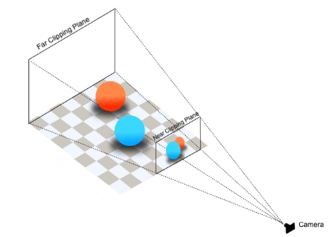
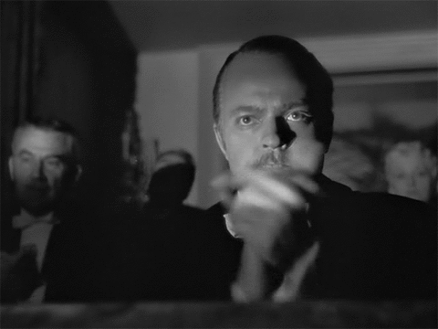

API javascript permettant de faire des rendus 2D et 3D dans le browser en utilisant la puissance de la carte graphique
En réalité, le WebGL permet de dessiner une grande quantité de triangle très rapidement
Peut nécessiter une carte graphique puissante
(Attention aux smartphones)
On parle de projection
Ces projections et calculs sont faits dans des programmes appelé shaders (en GLSL) et envoyés à la carte graphique
Développer ces programmes, créer des géométries et effectuer les projections prendrait trop de temps. Nous allons utiliser la librairie Three.js
Dans un nouveau dossier
<!DOCTYPE html>
<html lang="en">
<head>
<meta charset="UTF-8">
<title>WebGL - Three.js</title>
</head>
<body>
<script src="three.min.js"></script>
<script src="script.js"></script>
</body>
</html>
Ce cours a été réalisé avec la version 92 de Three.js
Pour fonctionner, nous allons avoir besoin d'
La scène a pour simple objectif de contenir les différents objets
/**
* Scene
*/
const scene = new THREE.Scene()
Il existe plusieurs types de caméras, mais deux sont à retenir
Nous allons utiliser une caméra avec perspective dont les paramètres sont les suivants
let windowWidth = window.innerWidth
let windowHeight = window.innerHeight
/**
* Camera
*/
const camera = new THREE.PerspectiveCamera(75, windowWidth / windowHeight)
camera.position.z = 3
scene.add(camera)
Un objet 3D est appelé Mesh et se compose d'une géométrie et d'une matière
Géométrie
Three.js possède de nombreuses géométries pré-faites
Faisons une Box
const geometry = new THREE.BoxGeometry(1, 1, 1)
Matière
La matière va définir quelle doit être la couleur à appliquer à chaque pixel visible de la géométrie
Cette couleur peut varier selon un code hexadecimal, des lumières, une image, etc.
Three.js possède de nombreuses matières, mais nous allons commencer avec la plus simple MeshBasicMaterial
const material = new THREE.MeshBasicMaterial({ color: 0xff0000 })
Et enfin, créons une Mesh à partir de la géométrie et du Material que nous rajoutons à la Scene
const mesh = new THREE.Mesh(geometry, material)
scene.add(mesh)
Tout en même temps
/**
* Object
*/
const geometry = new THREE.BoxGeometry(1, 1, 1)
const material = new THREE.MeshBasicMaterial({ color: 0xff0000 })
const mesh = new THREE.Mesh(geometry, material)
scene.add(mesh)
Enfin, nous souhaitons récupérer ce que voit la caméra et l'afficher dans un canvas
C'est le role du renderer qui va aussi créer un canvas qu'il suffira d'ajouter au body
/**
* Renderer
*/
const renderer = new THREE.WebGLRenderer()
renderer.setSize(windowWidth, windowHeight)
document.body.appendChild(renderer.domElement)
renderer.render(scene, camera)
Ouvrez index.html dans votre browser
Vous devriez voir un carré rouge sur fond noir
Ceci est votre premier rendu WebGL avec Three.js
Le canvas ne prend pas tout le viewport. C'est à cause des marges sur le body.
Rajoutez le CSS suivant
canvas
{
position: absolute;
top: 0;
left: 0;
width: 100%;
height: 100%;
}
Nous souhaiterions faire tourner le cube et faire bouger la caméra
Comme pour l'animation de canvas, à chaque frame, nous allons modifier les coordonnées des objets et faire un rendu
Nous allons utiliser requestAnimationFrame
/**
* Loop
*/
const loop = () =>
{
window.requestAnimationFrame(loop)
// Render
renderer.render(scene, camera)
}
loop()
Nous allons faire bouger la caméra en fonction de la souris
Pour cela, nous allons écouter l'événement mousemove et enregistrer la position de la souris dans un objet mouse qui nous servira plus tard
/**
* Mouse
*/
const mouse = { x: 0.5, y: 0.5 }
window.addEventListener('mousemove', (event) =>
{
mouse.x = event.clientX / windowWidth - 0.5
mouse.y = event.clientY / windowHeight - 0.5
})
Les Meshes peuvent être manipulées à l'aide des propriétés position, rotation et scale
Chacune de ces propriétés s'appelle un Vector3 et possède les propriétés x, y et z correspondant aux axes
La caméra peut aussi être manipulée ainsi
Position
mesh.position.x = mouse.x * 3
mesh.position.y = - mouse.y * 3
Rotation
mesh.rotation.x = mouse.y * 3
mesh.rotation.y = mouse.x * 3
Scale
mesh.scale.x = mouse.x * 3
mesh.scale.y = mouse.y * 3
Rotation permanente sur la mesh et position de la caméra par rapport à la souris
LookAt permet de diriger l'objet vers un vecteur
/**
* Loop
*/
const loop = () =>
{
window.requestAnimationFrame(loop)
// Update mesh
mesh.rotation.y += 0.005
// Update camera
camera.position.x = mouse.x * 3
camera.position.y = - mouse.y * 3
camera.lookAt(mesh.position)
// Render
renderer.render(scene, camera)
}
loop()
Three.js permet de créer des objets vides pouvant servir de container
Cela permet de les transformer plus facilement
const house = new THREE.Object3D()
scene.add(house)
const walls = new THREE.Mesh(
new THREE.BoxGeometry(1.5, 1, 1.5),
new THREE.MeshBasicMaterial({ color: 0xffcc99 })
)
house.add(walls)
Maison complète
/**
* House
*/
const house = new THREE.Object3D()
scene.add(house)
const floor = new THREE.Mesh(
new THREE.PlaneGeometry(4, 4, 1, 1),
new THREE.MeshBasicMaterial({ color: 0x66bb66 })
)
floor.rotation.x = - Math.PI * 0.5
floor.position.y = - 0.5
house.add(floor)
const walls = new THREE.Mesh(
new THREE.BoxGeometry(1.5, 1, 1.5),
new THREE.MeshBasicMaterial({ color: 0xffcc99 })
)
house.add(walls)
const roof = new THREE.Mesh(
new THREE.ConeGeometry(1.2, 0.6, 0.04),
new THREE.MeshBasicMaterial({ color: 0x885522 })
)
roof.position.y += 0.8
roof.rotation.y += Math.PI * 0.25
house.add(roof)
const door = new THREE.Mesh(
new THREE.BoxGeometry(0.02, 0.4, 0.2),
new THREE.MeshBasicMaterial({ color: 0xff8866 })
)
door.position.x = - 0.76
door.position.y = - 0.3
house.add(door)
const bush1 = new THREE.Mesh(
new THREE.SphereGeometry(0.1, 0.32, 0.32),
new THREE.MeshBasicMaterial({ color: 0x228833 })
)
bush1.position.x = - 0.8
bush1.position.z = 0.2
bush1.position.y = - 0.45
house.add(bush1)
const bush2 = new THREE.Mesh(
new THREE.SphereGeometry(0.08, 32, 32),
new THREE.MeshBasicMaterial({ color: 0x228833 })
)
bush2.position.x = - 0.8
bush2.position.z = - 0.2
bush2.position.y = - 0.48
house.add(bush2)
La gestion des lumières est très gourmande en performance
Pour fonctionner, nous devons utiliser des matières réagissant à la lumière et rajouter des lumières
Three.js supporte plusieurs types de matières
| MeshBasicMaterial | Couleur ou texture ne réagissant pas à la lumière |
| MeshLambertMaterial | Couleur ou texture réagissant à la lumière avec un rendu moyen |
| MeshPhongMaterial | Couleur ou texture réagissant à la lumière avec un rendu de meilleure qualité mais moins performant |
| MeshStandardMaterial | Comme MeshPhongMaterial, mais avec des paramètres physically based |
Physically based correspond à une volonté de baser les paramètres d'une entité sur des valeurs physique proche de la réalité
Exemples: gravité, force du vent, composition d'une matière, etc.
Nous allons remplacer MeshBasicMaterial par MeshStandardMaterial et rajouter du metalness et du rougness en paramètres
/* ... */
new THREE.MeshStandardMaterial({ color: 0x66bb66, metalness: 0.3, roughness: 0.8 })
/* ... */
Nos objets ont disparu, mais c'est normal
MeshStandardMaterial se basant sur la lumière, il faut rajouter ces lumières
Three.js supporte plusieurs types de lumières ayant des zones d'action différentes
Nous allons utiliser une PointLight que nous allons mettre au dessus de la porte, une DirectionalLight pour imiter l'illumitation du soleil et une AmbientLight pour éclairer les faces cachées
/**
* Lights
*/
const doorLight = new THREE.PointLight()
doorLight.position.x = -1.02
doorLight.position.y = 0
doorLight.position.z = 0
house.add(doorLight)
const ambientLight = new THREE.AmbientLight(0x555555)
scene.add(ambientLight)
const sunLight = new THREE.DirectionalLight(0xffffff, 0.6)
sunLight.position.x = 1
sunLight.position.y = 1
sunLight.position.z = 1
house.add(sunLight)
Les ombres ont toujours été un challenge pour la 3d temps réel. Même aujourd'hui, avec les cartes graphiques actuelles, les développeurs doivent faire preuve d'ingéniosité pour afficher des ombres
Three.js intègre une gestion basique et peu réaliste des ombres
Nous devons avertir le renderer que des ombres vont être utilisées
renderer.shadowMap.enabled = true
Nous devons ensuite avertir si chaque objet (Mesh) doit générer une ombre (castShadow) et/ou recevoir des ombres (receiveShadow)
walls.castShadow = true
walls.receiveShadow = true
Il est important de n'activer les ombres que sur les objets le nécessitant
Nous devons enfin avertir chaque lumière si elle doit générer des ombres
doorLight.castShadow = true
/* ... */
sunLight.castShadow = true
sunLight.shadow.camera.top = 1.20
sunLight.shadow.camera.right = 1.20
sunLight.shadow.camera.bottom = -1.20
sunLight.shadow.camera.left = -1.20
Notre DirectionalLight nécessite quelques autres paramètres afin de fonctionner
Pour plus de réalisme, il vaut mieux utiliser des textures
Texture est l'objet permettant de créer soi-même une texture dans Three.js, mais TextureLoader automatise le processus
/**
* Textures
*/
const textureLoader = new THREE.TextureLoader()
const grassTexture = textureLoader.load('grass.jpg')
Une fois la texture créée, il suffit de l'ajouter dans l'attribut map de MeshStandardMaterial
const floor = new THREE.Mesh(
new THREE.PlaneGeometry(4, 4, 1, 1),
new THREE.MeshStandardMaterial({ map: grassTexture, metalness: 0.3, roughness: 0.8 })
)
Le chargement de textures ne fonctionnera pas en local sur Chrome sans lancer un serveur pour des raisons de sécurité
Il est possible de manipuler la texture, par exemple en lui indiquant de se répéter un certain nombre de fois
grassTexture.wrapS = THREE.RepeatWrapping
grassTexture.wrapT = THREE.RepeatWrapping
grassTexture.repeat.set(4, 4)
Actuellement, si vous redimensionnez la fenêtre, le canvas conserve la même taille
Nous devons écouter l'événement de resize et mettre à jour la caméra et le renderer
/**
* Resize
*/
window.addEventListener('resize', () =>
{
// Save width and height
windowWidth = window.innerWidth
windowHeight = window.innerHeight
// Update camera
camera.aspect = windowWidth / windowHeight
camera.updateProjectionMatrix()
// Update renderer
renderer.setSize(windowWidth, windowHeight)
})
/**
* Scene
*/
const scene = new THREE.Scene()
/**
* Camera
*/
let windowWidth = window.innerWidth
let windowHeight = window.innerHeight
const camera = new THREE.PerspectiveCamera(70, windowWidth / windowHeight)
camera.position.z = 3
scene.add(camera)
/**
* Renderer
*/
const renderer = new THREE.WebGLRenderer()
renderer.setSize(windowWidth, windowHeight)
renderer.shadowMap.enabled = true
document.body.appendChild(renderer.domElement)
renderer.render(scene, camera)
/**
* Mouse
*/
const mouse = { x: 0.5, y: 0.5 }
window.addEventListener('mousemove', () =>
{
mouse.x = event.clientX / windowWidth - 0.5
mouse.y = event.clientY / windowHeight - 0.5
})
/**
* Textures
*/
const textureLoader = new THREE.TextureLoader()
const grassTexture = textureLoader.load('grass.jpg')
grassTexture.wrapS = THREE.RepeatWrapping
grassTexture.wrapT = THREE.RepeatWrapping
grassTexture.repeat.set(4, 4)
/**
* House
*/
const house = new THREE.Object3D()
scene.add(house)
const floor = new THREE.Mesh(
new THREE.PlaneGeometry(4, 4, 1, 1),
new THREE.MeshStandardMaterial({ map: grassTexture, metalness: 0.3, roughness: 0.8 })
)
floor.rotation.x = - Math.PI * 0.5
floor.position.y = - 0.5
floor.castShadow = true
floor.receiveShadow = true
house.add(floor)
const walls = new THREE.Mesh(
new THREE.BoxGeometry(1.5, 1, 1.5),
new THREE.MeshStandardMaterial({ color: 0xffcc99, metalness: 0.3, roughness: 0.8 })
)
walls.castShadow = true
walls.receiveShadow = true
house.add(walls)
const roof = new THREE.Mesh(
new THREE.ConeGeometry(1.2, 0.6, 0.04),
new THREE.MeshStandardMaterial({ color: 0x885522, metalness: 0.3, roughness: 0.8 })
)
roof.position.y += 0.8
roof.rotation.y += Math.PI * 0.25
roof.castShadow = true
roof.receiveShadow = true
house.add(roof)
const door = new THREE.Mesh(
new THREE.BoxGeometry(0.02, 0.4, 0.2),
new THREE.MeshStandardMaterial({ color: 0xff8866, metalness: 0.3, roughness: 0.8 })
)
door.position.x = - 0.76
door.position.y = - 0.3
door.castShadow = true
door.receiveShadow = true
house.add(door)
const bush1 = new THREE.Mesh(
new THREE.SphereGeometry(0.1, 0.32, 0.32),
new THREE.MeshStandardMaterial({ color: 0x228833, metalness: 0.3, roughness: 0.8 })
)
bush1.position.x = - 0.8
bush1.position.z = 0.2
bush1.position.y = - 0.45
bush1.castShadow = true
bush1.receiveShadow = true
house.add(bush1)
const bush2 = new THREE.Mesh(
new THREE.SphereGeometry(0.08, 32, 32),
new THREE.MeshStandardMaterial({ color: 0x228833, metalness: 0.3, roughness: 0.8 })
)
bush2.position.x = - 0.8
bush2.position.z = - 0.2
bush2.position.y = - 0.48
bush2.castShadow = true
bush2.receiveShadow = true
house.add(bush2)
/**
* Lights
*/
const doorLight = new THREE.PointLight()
doorLight.position.x = -1.02
doorLight.position.y = 0
doorLight.position.z = 0
doorLight.castShadow = true
house.add(doorLight)
const ambientLight = new THREE.AmbientLight(0x555555)
scene.add(ambientLight)
const sunLight = new THREE.DirectionalLight(0xffffff, 0.6)
sunLight.position.x = 1
sunLight.position.y = 1
sunLight.position.z = 1
sunLight.castShadow = true
sunLight.shadow.camera.top = 1.20
sunLight.shadow.camera.right = 1.20
sunLight.shadow.camera.bottom = -1.20
sunLight.shadow.camera.left = -1.20
house.add(sunLight)
/**
* Resize
*/
window.addEventListener('resize', () =>
{
windowWidth = window.innerWidth
windowHeight = window.innerHeight
camera.aspect = windowWidth / windowHeight
camera.updateProjectionMatrix()
renderer.setSize(windowWidth, windowHeight)
})
/**
* Loop
*/
const loop = () =>
{
window.requestAnimationFrame(loop)
// Update house
house.rotation.y += 0.01
// Update camera
camera.position.x = mouse.x * 3
camera.position.y = - mouse.y * 3
camera.lookAt(new THREE.Vector3())
// Render
renderer.render(scene, camera)
}
loop()
Les shaders sont ces fameux programmes qui sont envoyés à la carte graphique et qui permettent de transformer notre scène composée d'objets en un rendu 2D
Il existe deux types de shaders vertex et fragment
Vertex
Le vertex shader est en charge des vertices
Il va permettre d'appliquer une transformation afin d'avoir un effet tel qu'une ondulation pour imiter des vagues
Fragment
Le fragment shader est en charge des pixels visibles de la géométrie
Le programme va être exécuté pour chacun d'entre eux et va permettre de modifier la couleur
Three.js possède une matière appelée ShaderMaterial permettant d'appliquer des shaders sur une Mesh
Ressources
Les particules sont très bien gérées en WebGL
Il est possible d'en afficher des millions sans souci de performance
Three.js les gère avec Points et PointsMaterial
Three.js permet de charger des modèles 3D conçu dans des logiciels 3D au format .obj
Pour cela, il faut utiliser OBJLoader
Si vous souhaitez rajouter de la physique dans votre univers 3D, il faut utiliser un moteur de collision
Nous avons utilisé des features de JS non compatible avec certains anciens navigateur
L'action de rendre compatible notre code avec ces anciennes versions s'appelle du transpilage
C'est ce que permet de faire Babel que vous retrouverez dans ce template Gulp